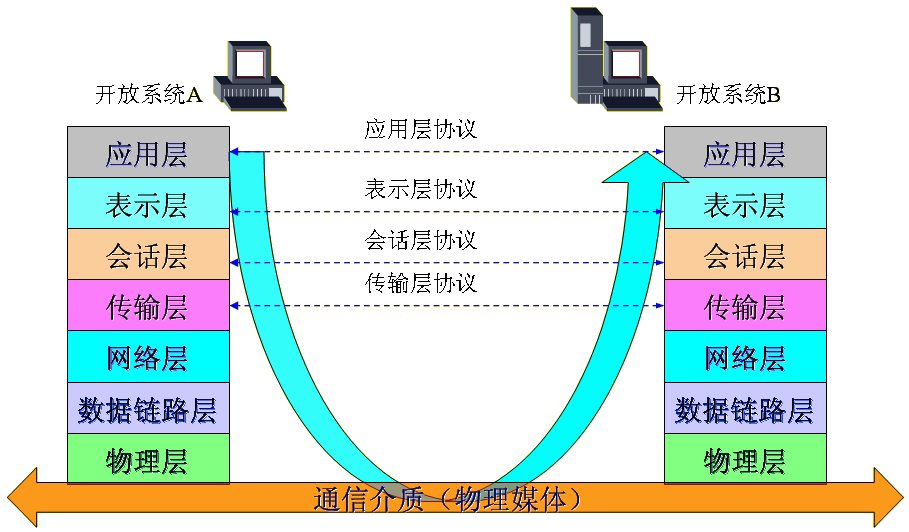
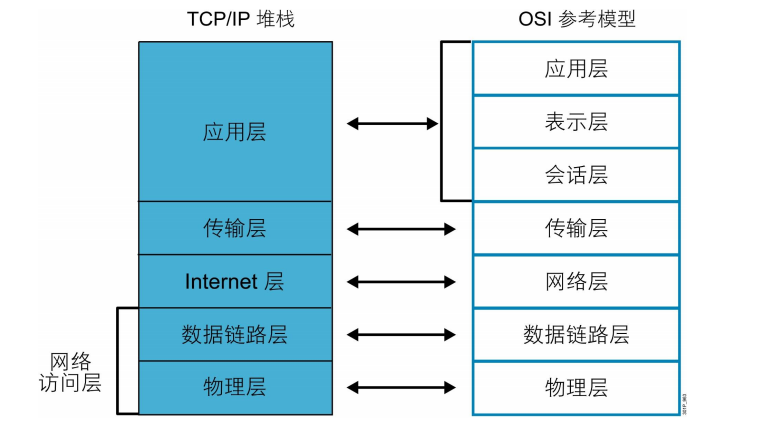
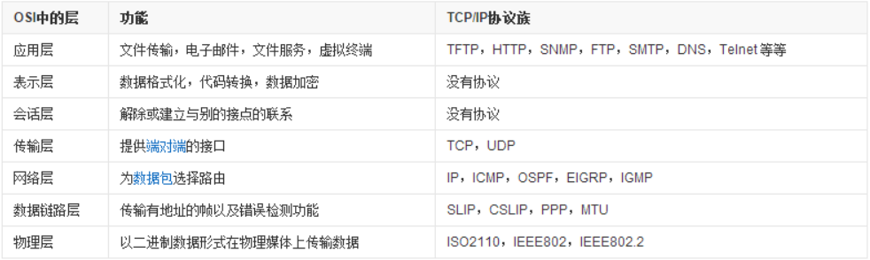

当今时代，运行一台没有连接网络的计算机几乎是难以想象的，幸运的是，Linux从一开始就是为
网络开发的，并且网络也是Linux做的最好的事情之一。掌握网络知识，对于Linux学习而言，就显
得非常有必要了。本节我们将带大家了解一些网络的基本概念，以及OSI参考模型和TCP/IP协议。
一、网络概念
什么是网络？
网络是由节点和连线构成，表示诸多对象及其相互联系。在计算机领域中，网络是信息传输、接收、
共享的虚拟平台，通过它把各个点、面、体的信息联系到一起，从而实现这些资源的共享。
网络是人类发展史来最重要的发明，提高了科技和人类社会的发展。
网络应用程序：
Web 浏览器（Chrome、IE、Firefox等）
即时消息（QQ、微信、钉钉等）
电子邮件（Outlook、foxmail 等）
协作（视频会议、VNC、Netmeeting、WebEx 等）
web网络服务（apache,nginx,IIS）
文件网络服务（ftp,nfs,samba）
数据库服务（ MySQL,MariaDB, MongoDB)
中间件服务（Tomcat，JBoss）
安全服务（ Netfilter）
网络的特征：
速度
成本
安全性
可用性
可扩展性
可靠性
拓扑
拓扑结构：
网络拓扑可分为物理拓扑和逻辑拓扑
物理拓扑描述了物理设备的布线方式
逻辑拓扑描述了信息在网络中的流动方式
物理拓扑中又分为多种拓扑结构，常见类型有：
总线拓扑：所有设备均可接收信号
星型拓扑：通过中心点传输；单一故障点
拓展星型拓扑：比星型拓扑的复原能力更强
环拓扑：信号绕环传输；单一故障点
双环拓扑：信号沿相反方向传输；比单环复原能力更强
全网状拓扑：容错能力强；但实施成本高
部分网状拓扑：在容错能力与成本之间寻求平衡
三种通讯模式：
单播unicast
广播broadcast
组播multicast
非屏蔽式双绞线UTP：交叉线，直通线
UTP交叉线线序
T568B：橙白 橙 绿白 蓝 蓝白 绿 棕白 棕
T568A：绿白 绿 橙白 蓝 蓝白 橙 棕白 棕
网络通讯传输模式
单工：单词传播，如收音机，广播电台
双工：双向
全双工：同时双向，如手机
半双工：轮流双向，如对讲机
二、OSI参考模型
OSI(Open System Interconnect）开放系统互连参考模型是国际标准化组织(ISO)和国际电
报电话咨询委员会(CCITT)联合制定的开放系统互连参考模型，为开放式互连信息系统提供了一种
功能结构的框架。它从低到高分别是：物理层、数据链路层、网络层、传输层、会话层、表示层
和应用层。
其目的是为异种计算机互连提供一个共同的基础和标准框架，并为保持相关标准的一致性和兼容性
提供共同的参考。OSI参考模型如下图所示：

OSI模型的七层结构：下层为相邻的上层提供服务
应用层：
作用：针对特定应用的协议
PDU：message
协议有：HTTP FTP TFTP SMTP SNMP DNS TELNET HTTPS POP3 DHCP
特性：网络进程访问应用层
为应用程序进行（如电子邮件、文件传输和终端仿真）提供网络服务
提供用户身份验证
表示层：
作用：设备固有数据格式和网络标准数据格式的转换
PDU：message
格式有，JPEG、ASCll、DECOIC、加密格式等
特性：数据表示
确保接收系统可以读出该数据
格式化数据
构建数据
协商用于应用层的数据传输语法
提供加密
会话层：
作用：通信管理。负责建立和断开通信连接（数据流动的逻辑通路）。管理传输层
以下的分层
PDU：message
对应主机进程，指本地主机与远程主机正在进行的会话
特性：主机间通信
建立、管理和终止在应用程序之间的会话
传输层：
作用：管理两个节点之间的数据传输，负责可靠传输（确保数据被可靠的传送到目
的地址）。
PDU：段segment
协议有：TCP UDP，数据包一旦离开网卡即进入网络传输层
特性：传输问题
确保数据传输的可靠性
建立、维护和终止虚拟电路
通过错误检测和恢复
信息流控制来保障可靠性
网络层：
作用：地址管理与路由选择
PDU：包packet
逻辑地址：IP地址
协议有：ICMP IGMP IP（IPV4 IPV6） ARP RARP
特性：数据传输
路由数据包
选择传递数据的最佳路径
支持逻辑寻址和路径选择
数据链路层：
作用：互连设备之间传送和识别数据帧
PDU：帧frame
物理地址：MAC地址
特性：访问介质
定义如何格式化数据以便进行传输以及如何控制对网络的访问
支持错误检测
物理层：
作用：以“0”、“1”代表电压的高低、灯光的闪灭。界定连接器和网线的规格
PDU：节bit
特性：二进制传输
为启动、维护已经关闭物流链路定义了电气规范、机械规范、过程规范和功能规范
单位：位bit
PDU: Protocol Data Unit,协议数据单元是指对等层次之间传递的数据单位
物理层的 PDU是数据位 bit
数据链路层的 PDU是数据帧 frame
网络层的PDU是数据包 packet
传输层的 PDU是数据段 segment
其他更高层次的PDU是消息 message
三、TCP/IP协议
TCP/IP也称”国际协议簇”， 即不仅指 TCP/IP协议本身，而且包括与其有关的协议。 TCP
为传输控制协议，IP为网际协议，是网络层最重要的协议。采用TCP/IP协议通过互联网传
送信息可减少网络中的传输阻塞，方便大批量的数据在网上传输，从而提高网络的传输效率。
TCP/IP协议簇的主要协议有TCP、IP、UDP、ICMP、RIP、TELNET、FTP、SMTP、ARP等
TCP/IP模型共定义了四层，分别是应用层，和OSI参考模型的分层有对应关系：

网络访问层(Network Access Layer)与OSI模型中的物理层以及数据链路层对应，在TCP/IP参考模
型中并没有详细描述，只是指出主机必须使用某种协议与网络相连。
Internet层(Internet Layer)是整个体系结构的关键部分，其功能是使主机可以把分组发往任何网
络，并使分组独立地传向目标。这些分组可能经由不同的网络，到达的顺序和发送的顺序也可能
不同。高层如果需要顺序收发，那么就必须自行处理对分组的排序。互联网层使用因特网协议(IP
，Internet Protocol)。TCP/IP参考模型的互联网层和OSI参考模型的网络层在功能上非常相似。
传输层(Tramsport Layer)使源端和目的端机器上的对等实体可以进行会话。
在这一层定义了两个端到端的协议：传输控制协议TCP和用户数据报协议UDP。
应用层(Application Layer)包含所有的高层协议，包括：虚拟终端协议(TELNET，
TELecommunications NETwork)、文件传输协议(FTP，File Transfer Protocol)、电子邮件传输协议
(SMTP，Simple，Mail Transfer Protocol)、域名服务(DNS，Domain Name Service)、网上新闻传输协议
(NNTP，Net News Transfer Protocol)和超文本传送协议(HTTP，HyperText Transfer Protocol)等。

四、常见网络设备
Hub集线器
Hub：多端口中继器，现已基本淘汰
Hub并不记忆该信息包是由哪个MAC地址发出，哪个MAC地址在Hub的哪个端口
Hub的特点：
共享带宽
半双工
以太网桥
交换式以太网的优势
扩展了网络带宽
分割了网络冲突域，使网络冲突被限制在最小的范围内
交换机作为更加智能的交换设备，能够提供更多用户所要
求的功能：优先级、虚拟网、远程检测…
学习时源MAC地址，转发时目的MAC地址
网桥是不能隔断广播的
同一广播域主机数量越多，网络性能越差
交换机（switch）
交换机是一种基于MAC（网卡的硬件地址）识别，能完成封装转发数据
包功能的网络设备。交换机可以“学习”MAC地址，并把其存放在内部地址表中，
通过在数据帧的始发者和目标接收者之间建立临时的交换路径，使数据帧直接由源
地址到达目的地址。
Hub和交换机区别
集线器属于OSI的第一层物理层设备，而网桥属于OSI的第二层数据链路层设备
从工作方式来看，集线器是一种广播模式，所有端口在一个冲突域里面。网桥
的可以通过端口隔离冲突
Hub是所有共享总线和共享带宽。网桥每个端口占一个带宽
路由器（router）
路由：把一个数据包从一个设备发送到不同网络里的另一个设备上去。这些工作
依靠路由器来完成。路由器只关心网络的状态和决定网络中的最佳路径。路由的实
现依靠路由器中的路由表来完成。为了实现路由,路由器需要做下列事情:
分隔广播域
选择路由表中到达目标最好的路径
维护和检查路由信息
连接广域网
双绞线物理层
wifi网络层
以太网数据链路层
搭建网络的分层网络架构：核心层、分布层、访问层
核心层Core Layer：企业级应用快速转发
分布层Distribution Layer：广播域，路由，安全，远程接入，访问层汇聚
访问层AccessLayer：终端接入